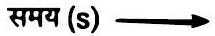
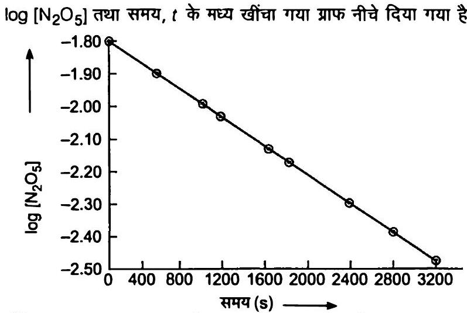
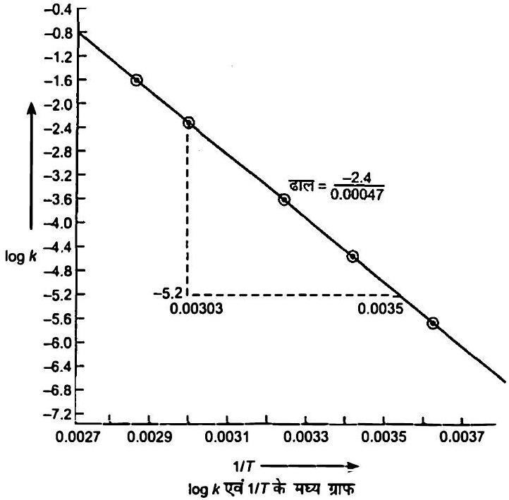

C4 H9 Cl (ब्यूटिल क्लोराइड) की विभिन्न समय पर दी गई सांद्रताओं से अभिक्रिया C4 H9 Cl+H2 O → C4 H9 OH+HCl के लिए विभिन्न समयांतरालों में औसत वेग की गणना कीजिए।
| t/s | 0 | 50 | 100 | 150 | 200 | 300 | 400 | 700 | 800 |
|---|---|---|---|---|---|---|---|---|---|
| [C4 H9 Cl] / mol L-1 | 0.100 | 0.0905 | 0.0820 | 0.0741 | 0.0671 | 0.0549 | 0.0439 | 0.0210 | 0.017 |
अतः हम औसत वेग, Δ[R] को Δ t से भाग देकर ज्ञात कर सकते हैं (सारणी 3.1)।
सारणी 3.1-ब्यूटिल क्लोराइड के जल अपघटन का औसत वेग
| [C4 H9 CI]t1 / mol L-1 | [C4 H9 CI]t2 / mol L-1 | t1 / s | t2 / s | ra v × 1 04 / m o l L-1 s-1 = -{[C4 H9 Cl]t2-[C4 H9 Cl]t1 /(t2-t1)} × 104 |
|---|---|---|---|---|
| 0.100 | 0.0905 | 0 | 50 | 1.90 |
| 0.0905 | 0.0820 | 50 | 100 | 1.70 |
| 0.0820 | 0.0741 | 100 | 150 | 1.58 |
| 0.0741 | 0.0671 | 150 | 200 | 1.40 |
| 0.0671 | 0.0549 | 200 | 300 | 1.22 |
| 0.0549 | 0.0439 | 300 | 400 | 1.10 |
| 0.0439 | 0.0335 | 400 | 500 | 1.04 |
| 0.0210 | 0.017 | 700 | 800 | 0.4 |
318 K पर N2 O5 के अपघटन की अभिक्रिया का अध्ययन, CCl4 विलयन में N2 O5 की सांद्रता के मापन द्वारा किया गया।
प्रारंभ में N2 O5 की सांद्रता 2.33 mol L-1 थी जो 184 मिनट बाद घटकर 2.08 mol L-1 रह गई।
यह अभिक्रिया निम्नलिखित समीकरण के अनुसार होती है-
इस अभिक्रिया के लिए औसत वेग की गणना घंटों, मिनटों तथा सेकेंडों के पद में कीजिए।
इस समय अंतराल में NO2 के उत्पादन की दर क्या है।
= 6.79 × 10-4 mol L-1 / min
= (6.79 × 10-4 mol L-1 min-1) × (60 min / 1 h)
= 4.07 × 10-2 mol L-1 / h
= 6.79 × 10-4 mol L-1 × 1 min / 60 s
= 1.13 × 10-5 mol L-1 s-1
उन अभिक्रियाओं की कुल कोटि की गणना कीजिए जिनका वेग व्यंजक है-
वेग = k[ A]1 / 2[ B]3 / 2
वेग = k[ A]3 / 2[ B]-1
निम्नलिखित वेग स्थिरांकों से अभिक्रिया कोटि की पहचान कीजिए-
k = 2.3 × 10-5 L mol-1 s-1
k = 3 × 10-4 s-1
अतः k = 3 × 10-4 s-1 प्रथम कोटि अभिक्रिया को निरूपित करता है।
प्रथम कोटि की अभिक्रिया N2 O5( g) → 2 NO2( g)+12 O2( g) में 318 K पर N2 O5 की प्रारंभिक सांद्रता 1.24 × 10-2 mol L-1 थी, जो 60 मिनट के उपरांत 0.20 × 10-2 mol L-1 रह गई।
318 K पर वेग स्थिरांक की गणना कीजिए।
या k = 2.303t2-t1 log [R]1[R]2
= 2.30360 × 0.7924 min-1
स्थिर आयतन पर N2 O5( g) के प्रथम कोटि के तापीय वियोजन पर निम्न आँकड़े प्राप्त हुए-
क्र.
सं.
समय/s कुल दाब/atm
| 1 | 0 | 0.5 |
|---|---|---|
| 2 | 100 | 0.512 |
N2 O5( g) के दो मोल वियोजित होकर N2 O4( g) के दो मोल तथा O2( g) का एक मोल बनाते हैं।
इससे N2 O4( g) के दाब में 2 x atm की वृद्धि होगी।
O2( g) के दाब में भी x atm की वृद्धि होगी।
प्रारंभ में t = 0
t समय पर
x = pt-0.5
pN2 O5 = 0.5-2 x = 0.5-2(pt-0.5) = 1.5-2 pt
t = 100 s ; pt = 0.512 atm पर
pN2 O5 = 1.5-2 × 0.512 = 0.476 atm
= 2.303100 s × 0.0216 = 4.98 × 10-4 s-1
प्रथम कोटि की एक अभिक्रिया के लिए वेग स्थिरांक k का मान = 5.5 × 10-14 s-1 पाया गया।
इस अभिक्रिया के लिए अर्धायु की गणना कीजिए।
दर्शाइए कि प्रथम कोटि की अभिक्रिया में 99.9 % अभिक्रिया पूर्ण होने में लगा समय अर्धायु (t1 / 2) का 10 गुना होता है।
= 2.303t log 103 = 2.303 × 3t log 10
अभिक्रिया के लिए अर्धायु t1 / 2 = 0.693k;
किसी अभिक्रिया के 500 K तथा 700 K पर वेग स्थिरांक क्रमशः 0.02 s-1 तथा 0.07 s-1 हैं।
Ea एवं A की गणना कीजिए।
log 0.070.02 = (Ea2.303 × 8.314 JK-1 mol-1)[700-500700 × 500]
0.544 = Ea × 5.714 × 10-419.15
Ea = 0.544 × 19.155.714 × 10-4 = 18230.8 J
A = 0.020.012 = 1.61
600 K ताप पर एथिल आयोडाइड के निम्नलिखित अभिक्रिया द्वारा अपघटन में, प्रथम कोटि वेग स्थिरांक 1.60 × 10-5 s-1 है।
इस अभिक्रिया की सक्रियण ऊर्जा 209 kJ / mol है।
700 K ताप पर वेग स्थिरांक की गणना कीजिए।
log k2 = log k1+Ea2.303 R[1T1-1T2]
= log (1.60 × 10-5)+209000 J mol-12.303 × 8.314 J mol-1 K-1 1600 K-1700 K
= -2.197
k2 = 6.36 × 10-3 s-1
निम्न अभिक्रियाओं के वेग व्यंजकों से इनकी अभिक्रिया कोटि तथा वेग स्थिरांकों की इकाइयाँ ज्ञात कीजिए।
अभिक्रिया की कोटि = 2
वेग स्थिरांक (k) की इकाई = वेग [NO]2
= mol-1 L s-1
अभिक्रिया की कोटि = 1+1 = 2
= mol L-1 s-1( mol L-1)(mol L-1)
= mol-1 L s-1
अभिक्रिया की कोटि = 32
= mol L-1 s-1( mol L-1)3 / 2
= mol-1 / 2 L1 / 2 s-1
अभिक्रिया की कोटि = 1
3 NO(g) → N2 O(g) वेग = k[NO]2
H2 O2(aq)+3 I-(aq)+2 H+ → 2 H2 O(l)+I3- वेग = k[H2 O2][I-]
CH3 CHO (g) → CH4( g)+CO(g) वेग = k[CH3 CHO]3 / 2
C2 H5 Cl (g) → C2 H4( g)+HCl(g) वेग = k[C2 H5 Cl]
अभिक्रिया 2 A+B → A2 B के लिए वेग = k[ A][B]2 यहाँ k का मान 2.0 × 10-6 mol-2 L2 s-1 है।
प्रारंभिक वेग की गणना कीजिए; जब [A] = 0.1 mol L-1 एवं [B] = 0.2 mol L-1 हो तथा अभिक्रिया वेग की गणना कीजिए; जब [A] घट कर 0.06 mol L-1 रह जाए।
वेग = k[A][B]2 है।
= 8.0 × 10-9 mol L-1 s-1
A की अभिक्रियत मात्रा = (0.1-0.06) = 0.04 mol L-1 है।
B की अभिक्रियत मात्रा = 12 × 0.04 mol L-1 = 0.02 mol L-1 है।
एक विशिष्ट समय पर B की सान्द्रता = (0.2-0.02) mol L-1 = 0.18 mol L-1 है।
= (2.0 × 10-6 mol-2 L2 s-1) × (0.06 mol L-1) × (0.18 mol L-1)2
= 3.89 × 10-9 mol L-1 s-1
प्लैटिनम सतह पर NH3 का अपघटन शून्य कोटि की अभिक्रिया है।
N2 एवं H2 के उत्पादन की दर क्या होगी जब k का मान 2.5 × 10-4 mol L-1 s-1 हो?
समीकरण को 2 से भाग देने पर
अत:,
= 2.5 × 10-4 mol L-1 s-1
= (2.5 × 10-4 mol L-1 s-1)2
= 1.25 × 10-4 mol L-1 s-1
∴
= 3.75 × 10-4 mol L-1 s-1
डाईमेथिल ईथर के अपघटन से CH4, H2 तथा CO बनते हैं।
इस अभिक्रिया का वेग निम्न समीकरण द्वारा दिया जाता है-
अभिक्रिया के वेग का अनुगमन बंद पात्र में बढ़ते दाब द्वारा किया जाता है, अतः वेग समीकरण को डाईमेथिल ईथर के आंशिक दाब के पद में भी दिया जा सकता है।
अतः
यदि दाब को bar में तथा समय को मिनट में मापा जाये तो अभिक्रिया के वेग एवं वेग स्थिरांक की इकाइयाँ क्या होंगी?
= bar min-1( bar )3 / 2 = bar -1 / 2 min-1
रासायनिक अभिक्रिया के वेग पर प्रभाव डालने वाले कारकों का उल्लेख कीजिए।
(a) अभिकारकों की प्रकृति आयनिक पदार्थ, सहसंयोजक यौगिकों से अधिक तेज़ी से अभिक्रिया करते हैं।
ऐसा इसलिए होता है क्योंकि वियोजन के बाद बने आयन अभिक्रिया के लिए तुरन्त उपलब्ध रहते हैं।
(b) अभिकारकों की सान्द्रता अभिक्रिया का वेग, अभिकारकों की सान्द्रता बढ़ने के साथ बढ़ता है।
(c) ताप ताप बढ़ाने पर रासायनिक अभिक्रिया का वेग सामान्यतः बढ़ता है।
(d) अभिकारकों का पृष्ठीय क्षेत्रफल अभिक्रिया का वेग अभिकारकों के पृष्ठीय क्षेत्रफल के बढ़ने के साथ बढ़ता है।
अतः अभिकारकों का चूर्ण रूप, उनके दानेदार रूप से अधिक पसन्द किया जाता है।
(e) उत्प्रेरक उत्प्रेरक की उपस्थिति भी अभिक्रिया के वेग को प्रभावित करती है।
उत्प्रेरक का कार्य सक्रियण ऊर्जा को कम करना है।
उत्प्रेरक द्वारा सक्रियण ऊर्जा जितनी कम हो जायेगी अभिक्रिया का वेग उतना ही अधिक हो जायेगा।
किसी अभिक्रियक के लिए एक अभिक्रिया द्वितीय कोटि की है।
अभिक्रिया का वेग कैसे प्रभावित होगा; यदि अभिक्रियक की सांद्रता-
(i) जब A की सान्द्रता दोगुनी कर दी जाए
अर्थात्
वेग = k(2 a)2 = 4 k a2
अतः अभिक्रिया का वेग चार गुना हो जाता है।
अर्थात्
वेग = k(a2)2 = 14 k a2
अतः अभिक्रिया का वेग 14 गुना हो जाता है अर्थात् एक चौथाई घट जाता है।
दुगुनी कर दी जाए
आधी कर दी जाए
वेग स्थिरांक पर ताप का क्या प्रभाव पड़ता है? ताप के इस प्रभाव को मात्रात्मक रूप में कैसे प्रदर्शित कर सकते हैं?
ताप में प्रत्येक 10° C वृद्धि पर यह लगभग दोगुना हो जाता है।
आरहेनिअस समीकरण इस प्रभाव को मात्रात्मक रूप में दर्शाता है।
एक प्रथम कोटि की अभिक्रिया के निम्नलिखित आँकड़े प्राप्त हुए-
| t/s | 0 | 30 | 60 | 90 |
|---|---|---|---|---|
| [A]/ mol L-1 | 0.55 | 0.31 | 0.17 | 0.085 |
= -(0.17-0.31) mol L-1(60-30) s
= 0.1430 mol L- s-1
औसत वेग = 4.67 × 10-3 mol L-1 s-1
= 1.91 × 10-2 s-1
t = 60 s पर; k′ = 2.303(60 s) log 0.550.17 = 1.96 × 10-2 s-1
t = 90 s पर; k′ = 2.303(90 s) log 0.550.085 = 2.07 × 10-2 s-1
औसत k′ = (1.91+1.96+2.07) × 10-2 s-1)3
छद्म प्रथम कोटि वेग स्थिरांक = 1.98 × 10-2 s-1
एक अभिक्रिया A के प्रति प्रथम तथा B के प्रति द्वितीय कोटि की है
अतः अभिक्रिया का वेग 9 गुनां हो जाता है।
अतः अभिक्रिया का वेग 8 गुना हो जाता है।
अवकल वेग समीकरण लिखिए।
B की सांद्रता तीन गुनी करने से वेग पर क्या प्रभाव पड़ेगा?
A तथा B दोनों की सांद्रता दुगुनी करने से वेग पर क्या प्रभाव पड़ेगा?
A और B के मध्य अभिक्रिया में A और B की विभिन्न प्रारंभिक सांद्रताओं के लिए प्रारंभिक वेग (r0) नीचे दिए गए हैं।
A और B के प्रति अभिक्रिया की कोटि क्या है?
| A / mol L-1 | 0.20 | 0.20 | 0.40 |
|---|---|---|---|
| B / mol L-1 | 0.30 | 0.10 | 0.05 |
| r0 / mol L-1 s-1 | 5.07 × 10-5 | 5.07 × 10-5 | 1.43 × 10-4 |
वेग 1 = k[0.20]x[0.30]y = 5.07 × 10-5
वेग 2 = k[0.20]x[0.10]y = 5.07 × 10-5
( वेग )3 = k[0.40]x[0.05]y = 1.43 × 10-4
= 1
y = 0
∴
या
या
या
तथा, B के सापेक्ष कोटि = 0
2 A+B → C+D अभिक्रिया की बलगतिकी अध्ययन करने पर निम्नलिखित परिणाम प्राप्त हुए।
अभिक्रिया के लिए वेग नियम तथा वेग स्थिरांक ज्ञात कीजिए।
| प्रयोग | [A]/ mol L-1 | [B]/ mol L-1 | D के विरचन का प्रारंभिक वेग/ mol L-1 min-1 |
|---|---|---|---|
| I | 0.1 | 0.1 | 6.0 × 10-3 |
| II | 0.3 | 0.2 | 7.2 × 10-2 |
| III | 0.3 | 0.4 | 2.88 × 10-1 |
| IV | 0.4 | 0.1 | 2.40 × 10-2 |
( वेग )1 = 6.0 × 10-3 = k(0.1)x(0.1)y
( वेग )2 = 7.2 × 10-2 = k(0.3)x(0.2)y
( वेग )3 = 2.88 × 10-1 = k(0.3)x(0.4)y
( वेग )4 = 2.40 × 10-2 = k(0.4)x(0.1)y
∴
( वेग )2( वेग )3 = k(0.3)x(02)yk(0.3)x(0.4)y
= 7.2 × 10-22.88 × 10-1
या
∴
प्रयोग ॥ के मानों का उपयोग करते हुए,
k = वेग [A][B]2 = 7.2 × 10-2 mol L-1 min-1(0.3 mol L-1)(0.2 mol L-1)2
= 6.0 mol-2 L2 min-1
A तथा B के मध्य अभिक्रिया A के प्रति प्रथम तथा B के प्रति शून्य कोटि की है।
निम्न तालिका में रिक्त स्थान भरिए।
| प्रयोग | [A] / mol L-1 | [B] / mol L-1 | प्रारंभिक वेग/mol L-1 min-1 |
|---|---|---|---|
| I | 0.1 | 0.1 | 2.0 × 10-2 |
| II | - | 0.2 | 4.0 × 10-2 |
| III | 0.4 | 0.4 | - |
| IV | - | 0.2 | 2.0 × 10-2 |
अत:,
k = 2.0 × 10-2 mol L-1 min-10.1 mol L-1 = 0.2 min-1
[A] = 4.0 × 10-2 mol L-1 min-10.2 min-1 = 0.2 mol L-1
[A] = 0.2 mol L-1
वेग = 0.2 min-1 × 0.4 mol L-1
वेग = 8 × 10-2 mol L-1 min-1
अत:,
[A] = 0.1 mol L-1
नीचे दी गई प्रथम कोटि की अभिक्रियाओं के वेग स्थिरांक से अर्धायु की गणना कीजिए-
= 3.46 × 10-3 s
= 3.46 × 10-1 min
200 s-1
2 min-1
4 year -1
14 C के रेडियोएक्टिव क्षय की अर्धायु 5730 वर्ष है।
एक पुरातत्व कलाकृति की लकड़ी में, जीवित वृक्ष की लकड़ी की तुलना में 80 % 14 C की मात्रा है।
नमूने की आयु का परिकलन कीजिए।
रेडियोऐक्टिव पदार्थ प्रथम कोटि बलगतिकी का पालन करते हैं।
= 2.303 × 5730 × 0.09690.693
= 1845 yr
गैस प्रावस्था में 318 K पर N2 O5 के अपघटन की [2 N2 O5 → 4 NO2+O2] अभिक्रिया के आँकड़े नीचे दिए गए हैं-
| t/s | 0 | 400 | 800 | 1200 | 1600 | 2000 | 2400 | 2800 | 3200 |
|---|---|---|---|---|---|---|---|---|---|
| 102 × [N2 O5] / mol L-1 | 1.63 | 1.36 | 1.14 | 0.93 | 0.78 | 0.64 | 0.53 | 0.43 | 0.35 |

= 0.815 × 10-2 M
अर्द्ध आयु काल = ग्राफ में ऊपर दी गयी मात्रा के सापेक्ष समय = 1400 s (लगभग)
| समय (s) | 0 | 400 | 800 | 1200 | 1600 | 2000 | 2400 | 2800 | 3200 |
|---|---|---|---|---|---|---|---|---|---|
| N2 O5] × 10-2 mol L-1 | 1.63 | 1.36 | 1.14 | 0.93 | 0.78 | 0.64 | 0.53 | 0.43 | 0.35 |
| l o g [ N2 O5] | -1.79 | -1.87 | -1.94 | -2.03 | -2.11 | -2.19 | -2.28 | -2.37 | -2.46 |

वेग नियम,
k = 0.67 × 2.3033200
या
[N2 O5] एवं t के मध्य आलेख खींचिए।
अभिक्रिया के लिए अर्धायु की गणना कीजिए।
log [N2 O5] एवं t के मध्य ग्राफ खींचिए।
अभिक्रिया के लिए वेग नियम क्या है?
वेग स्थिरांक की गणना कीजिए।
k की सहायता से अर्धायु की गणना कीजिए तथा इसकी तुलना (ii) से कीजिए।
प्रथम कोटि की अभिक्रिया के लिए वेग स्थिरांक 60 s-1 है।
अभिक्रियक को अपनी प्रारंभिक सांद्रता से 116 वाँ भाग रह जाने में कितना समय लगेगा?
= 2.30360 s × 4 log 2 = 2.30360 s × 4 × 0.3010 = 4.62 × 10-2 s
समय = 4.62 × 10-2 s
नाभिकीय विस्फोट का 28.1 वर्ष अर्धायु वाला एक उत्पाद 90 Sr होता है।
यदि कैल्सियम के स्थान पर 1 μ g, 90 Sr नवजात शिशु की अस्थियों में अवशोषित हो जाए और उपापचयन से ह्रास न हो तो इसकी 10 वर्ष एवं 60 वर्ष पश्चात् कितनी मात्रा रह जाएगी?
तब,
या
a(a-x) = Antilog(0.107) = 1.279
(a-x) = a1.279 = (1 μ g)1.279 = 0.7819 μ g
अत: 10 वर्ष पश्चात् बची मात्रा = 0.7819 μ g
या
a(a-x) = Anti log 0.642 = 4.385
(a-x) = a4.385 = (1 μ g)4.385 = 0.2280 μ g
अत: 60 वर्ष पश्चात् बची मात्रा = 0.2280 μ g
दर्शाइए कि प्रथम कोटि की अभिक्रिया में 99 % अभिक्रिया पूर्ण होने में लगा समय 90 % अभिक्रिया पूर्ण होने में लगने वाले समय से दुगुना होता है।
अभिक्रिया के 99\% पूर्ण होने के लिए प्रयुक्त समय,
t99 % = 4.602k
अभिक्रिया के 90 % पूर्ण होने के लिए प्रयुक्त समय,
इसका अर्थ यह है कि प्रथम कोटि की अभिक्रिया में 99 % अभिक्रिया पूर्ण होने में लगा समय 90 % अभिक्रिया के पूर्ण होने में लगने वाले समय का दोगुना होता है।
एक प्रथम कोटि की अभिक्रिया में 30 % वियोजन होने में 40 मिनट लगते हैं।
t1 / 2 की गणना कीजिए।
= 2.30340 log 1.428 = 2.30340 × 0.1548
k = 8.91 × 10-3 min-1
t1 / 2 = 77.78 min
543 K ताप पर एज़ोआइसोप्रोपेन के हेक्सेन तथा नाइट्रोजन में विघटन के निम्न आँकड़े प्राप्त हुए।
वेग स्थिरांक की गणना कीजिए।
| t(sec) | p( mm Hg में) |
|---|---|
| 0 | 35.0 |
| 360 | 54.0 |
| 720 | 63.0 |
| प्रारम्भिक दाब | pi | 0 | 0 |
|---|---|---|---|
| t समय पश्चात् | pi-p | p | p |
अथवा
a = pi ;(a-x) = pi-p;समी (i) से p का मान रखने पर
अपघटन अभिक्रिया गैसीय प्रकृति की है अतः वेग स्थिरांक k की निम्न प्रकार गणना कर सकते हैं
a तथा (a-x) का मान रखने पर
= 2.303(360 s) log 3516
= 2.303(360 s) log 2.1875
= 2.303 × 0.33995(360 s)
= 2.17 × 10-3 s-1
= -2.303(720 s) log 5 = 2.303 × 0.6990(720 s)
= 2.24 × 10-3 s-1
स्थिर आयतन पर, SO2 Cl2 के प्रथम कोटि के ताप अपघटन पर निम्न आँकड़े प्राप्त हुए-
अभिक्रिया वेग की गणना कीजिए जब कुल दाब 0.65 atm हो।
| प्रयोग | समय/s | कुल दाब/atm |
|---|---|---|
| 1 | 0 | 0.5 |
| 2 | 100 | 0.6 |
t समय पश्चात् कुल दाब अर्थात्
अतः, प्रारम्भिक सान्द्रता
t समय पश्चात् सान्द्रता
= pi-pt+pi
= 2 pi-pt
प्रथम कोटि की अभिक्रिया के लिए,
a एवं (a-x) के मान रखने पर
प्रश्नानुसार, pi = 0.5 atm ; pt = 0.6 atm,
= -2.303(100 s) log 0.5 atm0.4 atm
= 2.303(100 s) log 1.25
= 2.303(100 s) × 0.0969
= 2.23 × 10-3 s-1
= (1-0.65) = 0.35 atm
k = 2.23 × 10-3 s-1
वेग = k × pSO2 Cl2 = (2.23 × 10-3 s-1) × (0.35 atm)
वेग = 7.8 × 10-4 atm s-1
विभिन्न तापों पर N2 O5 के अपघटन के लिए वेग स्थिरांक नीचे दिए गये हैं-
| T / ° C | 0 | 20 | 40 | 60 | 80 |
|---|---|---|---|---|---|
| 105 × k / s-1 | 0.0787 | 1.70 | 25.7 | 178 | 2140 |
30° C तथा 50° C पर वेग स्थिरांक को प्रागुक्त कीजिए।
| T(K) | 273 | 293 | 313 | 333 | 353 |
|---|---|---|---|---|---|
| 1 / T | 0.003663 | 0.003413 | 0.003213 | 0.003003 | 0.002833 |
| logk | - 6.1040 | - 4.7696 | - 3.5900 | -2.7496 | - 1.6996 |

∴
= 97875 J mol-1
= 97.875 kJ mol-1
इसकी तुलना y = m x+c से करते हैं।
यह अंतःखण्ड रूप में रेखा की समीकरण है।
log A = रुअक्ष अर्थात् log k अक्ष पर अंतःखण्ड का मान
= 6.2[y2-y1 = -1-(7.2)]
आवृत्ति गुणक, A = Antilog 6.2 = 1585000
= 1.585 × 106 collisions s-1
A = 1.585 × 106 collisions s-1
| T(K) | 1/T | ग्राफ से log k का मान | k का मान |
|---|---|---|---|
| 303 | 0.003300 | - 4.2 | 6.31 × 10-5 s-1 |
| 323 | 0.003096 | -2.8 | 1.585 × 10-3 s-1 |
546 K ताप पर हाइड्रोकार्बन के अपघटन में वेग स्थिरांक 2.418 × 10-5 s-1 है।
यदि सक्रियण ऊर्जा 179.9 kJ / mol हो तो पूर्व-घातांकी गुणन का मान क्या होगा?
R = 8.314 J K-1 mol-1
T = 546 K
= log (2.418 × 10-5 s-1)
+179900 J mol-12.303 × (8.314 JK-1 mol-1) × 546 K
= -4.6184+17.21
= 12.5916
A = Antilog 12.5916
A = 3.9 × 1012 s-1
किसी अभिक्रिया A → उत्पाद के लिए k = 2.0 × 10-2 s-1 है।
यदि A की प्रारंभिक सांद्रता 1.0 mol L-1 हो तो 100s के पश्चात् इसकी सांद्रता क्या रह जाएगी?
या
[A]0[A] = Antilog 0.8684 = 7.3858
[A] = [A]07.3858 = [1 M]7.3858 = 0.135 M
[A] = 0.135 M
अम्लीय माध्यम में सूक्रोस का ग्लूकोस एवं फ्रक्टोज़ में विघटन प्रथम कोटि की अभिक्रिया है।
इस अभिक्रिया की अर्धायु 3.0 घंटे है।
8 घंटे बाद नमूने में सूक्रोस का कितना अंश बचेगा?
तथा
log [A]0[A] = 0.6933 h × (8 h)2.303 = 0.8024
[A] = [A]06.345
= 1 M6.345 = 0.1576 M [∵[A]0 = 1 M]
हाइड्रोकार्बन का विघटन निम्न समीकरण के अनुसार होता है।
Ea की गणना कीजिए।
Ea = (28000 K) × R
= (28000 K) × (8.314 K-1 J mol-1)
= 232792 J mol-1
Ea = 232.792 kJ mol-1
H2 O2 के प्रथम कोटि के विघटन को निम्न समीकरण द्वारा लिख सकते हैं-
इस अभिक्रिया के लिए Ea की गणना कीजिए।
कितने ताप पर इस अभिक्रिया की अर्धायु 256 मिनट होगी?
आरहेनिअस समीकरण के अनुसार,
या
log k = log A-Ea2.303 R T
प्रश्नानुसार,
दोनों समीकरणों की तुलना करने पर,
Ea = 1.25 × 104 K2 × 2.303 × 8.314( J K-1 mol-1)
= 23.93 × 104 J mol-1
= 239.3 kJ mol-1
प्रथम कोटि अभिक्रिया के लिए,
= 4.51 × 10-5 s-1
आरहेनिअस सिद्धान्त के अनुसार,
log (4.51 × 10-5) = 14.34-1.25 × 104T
-4.35 = 14.34-1.25 × 104T
1.25 × 104T = 14.34+4.35 = 18.69
T = 1.25 × 10418.69 = 669 K
10° C ताप पर A के उत्पाद में विघटन के लिए k का मान 4.5 × 103 s-1 तथा सक्रियण ऊर्जा 60 kJ mol-1 है किस ताप पर k का मान 1.5 × 104 s-1 होगा?
log 3.333 = 3133.62(T2-283283 T2)
0.52883133.62 = T2-283283 T2
0.5288 × 2833133.62 = T2-283T2
1-283T2 = 0.04776
T2 = 2831-0.04776 = 2830.95224
T2 = 297.19 K
= (297.19-273.0) = 24.19° C
298 K ताप पर प्रथम कोटि की अभिक्रिया के 10 % पूर्ण होने का समय 308 K ताप पर 25 % अभिक्रिया पूर्ण होने में लगे समय के बराबर है।
यदि A का मान 4 × 1010 s-1 हो तो 318 K ताप पर k तथा Ea की गणना कीजिए।
308 K पर, k2 = 2.303t log 10075
समी (ii) को समी (i) द्वारा भाग देने पर
= 0.12490.0458 = 2.73
आरहेनिअस सिद्धान्त के अनुसार
log 2.73 = Ea2.303 R[308-298298 × 308]
Ea = 0.4361 × 2.303 × (8.314 J mol-1) × 298 × 30810
Ea = 76640 Jmol-1
= 76.640 kJ mol-1
आरहेनिअस समीकरण के अनुसार
log k = log (4 × 1010)-76640 J mol-12.303 × (8.314 J mol-1 K-1) × (318 K)
log k = 10.6021-12.5870
= -1.9849
अत:
= Antilog (2 .0151) = 1.035 × 10-2 s-1
ताप में 293 K से 313 K तक वृद्धि करने पर किसी अभिक्रिया का वेग चार गुना हो जाता है।
इस अभिक्रिया के लिए सक्रियण ऊर्जा की गणना यह मानते हुए कीजिए कि इसका मान ताप के साथ परिवर्तित नहीं होता।
0.6021 = Ea2.303 × (8.314 J mol-1) × 20293 × 313
Ea = 0.6021 × 2.303 × 8.314 × 293 × 31320 J mol-1 = 52863 J mol-1
Ea = 52.863 kJ mol-1
R → P, अभिक्रिया के लिए अभिकारक की सांद्रता 0.03 M से 25 मिनट में परिवर्तित हो कर 0.02 M हो जाती है।
औसत वेग की गणना सेकेंड तथा मिनट दोनों इकाइयों में कीजिए।
= -Δ[R]Δ t = -[R2]-[R1]t2-t1
औसत वेग ( मिनट में ) = -(0.02-0.03) molL-125 min
= 4 × 10-4 molL-1 min-1
औसत वेग ( सेकण्ड में ) = -(0.02-0.03) mol L-1(25 × 60) s = -(-0.01) mol L-1(1500) s
= 6.66 × 10-6 molL-1 s-1
2 A → उत्पाद, अभिक्रिया में A की सांद्रता 10 मिनट में 0.5 mol L-1 से घट कर 0.4 mol L-1 रह जाती है।
इस समयांतराल के लिए अभिक्रिया वेग की गणना कीजिए।
= -12 (0.4-0.5) mol L-110 min
= 0.005 mol L-1 min-1
एक अभिक्रिया A+B → उत्पाद, के लिए वेग नियम r = k[ A]1 / 2[ B]2 से दिया गया है।
अभिक्रिया की कोटि क्या है?
अणु X का Y में रूपांतरण द्वितीय कोटि की बलगतिकी के अनुरूप होता है।
यदि X की सांद्रता तीन गुनी कर दी जाए तो Y के निर्माण होने के वेग पर क्या प्रभाव पड़ेगा?
समीकरण (ii) को समीकरण (i) से भाग देने पर
एक प्रथम कोटि की अभिक्रिया का वेग स्थिरांक 1.15 × 10-3 s-1 है।
इस अभिक्रिया में अभिकारक की 5 g मात्रा को घटकर 3 g होने में कितना समय लगेगा?
प्रारम्भिक मात्रा [R]0 = 5 g
अन्तिम मात्रा [R] = 3 g
= 2.303(1.15 × 10-3 s-1)(log 5-log 3)
= 2.303(1.15 × 10-3 s-1)(0.6990-0.4771)
= 2.0 × 103 × 0.2219 s = 443.8 s
= 444 s
SO2 Cl2 को अपनी प्रारंभिक मात्रा से आधी मात्रा में वियोजित होने में 60 मिनट का समय लगता है।
यदि अभिक्रिया प्रथम कोटि की हो तो वेग स्थिरांक की गणना कीजिए।
= 0.693(60 × 60) s
= 1.925 × 10-4 s-1
ताप का वेग स्थिरांक पर क्या प्रभाव होगा?
ऐसा इसलिए होता है क्योंकि प्रभावी संघट्ट की संख्या लगभग दोगुनी हो जाती है।
आरहेनिअस समीकरण k = A e-Ea / R T अभिक्रिया वेग की ताप पर सही निर्भरता को दर्शाता है।
इसमें A आवृति गुणक है और Ea अभिक्रिया की सक्रियण ऊर्जा है।
परमताप, 298 K में 10 K की वृद्धि होने पर रासायनिक अभिक्रिया का वेग दुगुना हो जाता है।
इस अभिक्रिया के लिए Ea की गणना कीजिए।
k2k1 = 2 ; R = 8.314 JK-1 mol-1
T1 = 295 K ; T2 = 305 Ki
∴ log 2 = Ea2.303 × (8.314 JK-1 mol-1)[1295 K-1305 K] .
या
= 51855 J mol-1
= 5.1855 × 104 J mol-1
= 51.855 kJ mol-1
581 K ताप पर अभिक्रिया 2 HI(g) → H2( g)+I2( g) के लिए सक्रियण ऊर्जा का मान 209.5 kJ mol-1 है।
अणुओं के उस अंश की गणना कीजिए जिसकी ऊर्जा सक्रियण ऊर्जा के बराबर अथवा इससे अधिक है।
ln x = -EaR T या log x = -Ea2.303 R T
x = Antilog(-18.8324) = Antilog 19.1677 = 1.471 × 10-19